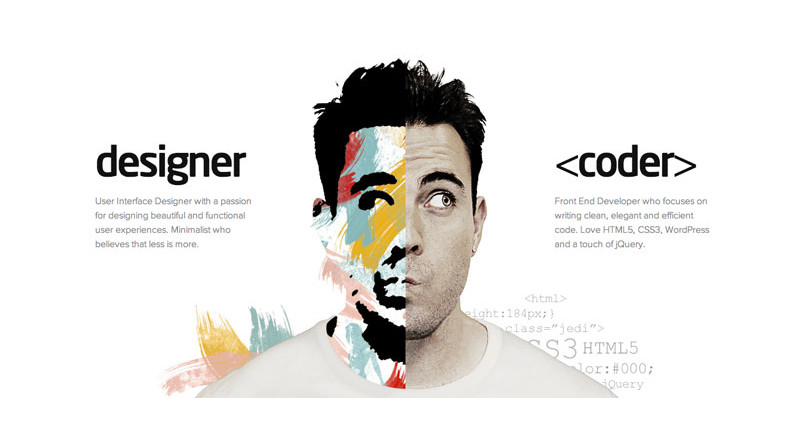

Web Design vs. Web Development
Web design governs all aspects involved with the visual aesthetics and usability of a website; such as color schemes, layouts, information flow.
A web designer :-
- must always begin by considering a client’s website objectives and then move on to an Information Architecture (IA)
- uses graphics and graphic design software (think Adobe Photoshop, Illustrator and InDesign) to create an interface for the web
- Should be concerned with what the users see on their computer screens or mobile devices through the use of color, images, typography and layout.
- can start with creating wireframes and finally move to the design stage.
- Should use several basic design principles to achieve an aesthetically pleasing layout while offering excellent user experience and high quality.
- Might not always be the person writing the code and in some cases he can work independently of the team that takes a website design live.
- May continue his/her education in a variety of fields, but are most commonly drawn to graphic design and arts.
Web development governs all the code that makes a website tick.
Web developers:-
- Are sometimes called programmers.
- Skills from technical ability and thinking to logic are essential part of their repertoires. Thus, they are often thought of as “left-brained workers”.
- Are further split into two sub-categories; front-end developers, and back-end developers.
- Front-end developers as the connection between both web designers and back-end developers. That is due to the fact they have a little knowledge of both.
- Typically will focus on the front end programming of a site using HTML, CSS and JavaScript, while other developers will focus on server side programming like PHP, Java, Ruby, and .NET.